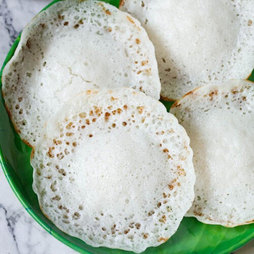
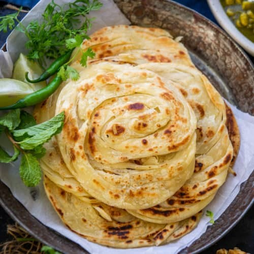
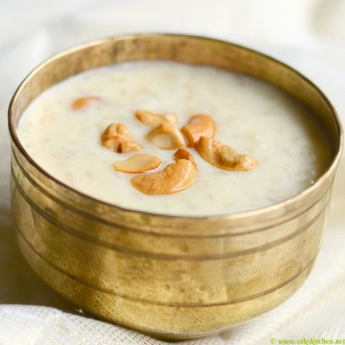

This is a common breakfast food in Kerala named Palappam (pronounced pahl-up-uhm).
It is a dish that is made using fermented rice batter and coconut milk.
Palappams are lightly sweet and usually served with a stew side dish.Idiyappam (pronounced ih-dee-yup-uhm) is a dish where rice flour is formed into noodles and steamed.
This dish is served with some sugar on top and a side curry, often a potato or egg curry.Idli (pronounced id-lee) is a form of rice cake made up of rice and lentils.
This dish is eaten with a popular vegetable curry named Sambar or a spicy/savory spread knows as green chutney.
Lunch
The Thalasseri (pronounced Thah-luh-shay-ree) Chicken Biriyani originating from the Thalasseri town of northern Kerala is a very famous, delicious dish.
The main ingredients consist of an assortment of spices, chicken, and rice.
However, sometimes potatoes and hard-boiled eggs are also added.Sambar (pronounced Sahm- bar) is a type of lentil-based vegetable curry.
This tangy and spicy flavored curry is made up of many vegetables, lentils, herbs, spices, and tamarind.
Sambar can be eaten with a variety of dishes such as Idli for breakfast, or it is often eaten with rice for lunch.
However, sometimes potatoes and hard-boiled eggs are also added.Kappa (pronounced kah-pah) is a dish made of boiled tapioca, coconut paste, red chili peppers, and various other spices for flavor.
This delicious dish is usually eaten with a side of fish curry.
Dinner

Parotta (pronounced puh-roh-tah) is a layered flatbread made from a refined wheat flour.
Parottas are eaten with a side dish such as a meat curry or more commonly with the popular Kerala beef fry dish.Kerala beef fry is a delicious dish made of beef that is slow-roasted in a mixture consisting of various spices, herbs, and coconut oil.
This dish is usually eaten with pieces of Indian flatbread (Parottas or Chapatis).Kanji and Payar is a comfort food in Kerala.
Kanji (pronounced kan-jee) is a rice and water dish similar to a porridge.
This hot porridge dish is eaten with various curries and vegetables.
However, the majority almost always eat kanji with a dish named Payar (pronounced pai-er).
Payar is cooked green grams or mung beans with spices and herbs for flavors.
Dessert

Payasum (pronounced pai-yuh-sum) is a sweet pudding dish made up of milk, sugar, and rice.
This pudding is often topped off with nuts and dried fruits.
Uniyappam (pronounced ooh-ni-yup-um) is a small, round dessert that is fried in oil and is mainly made of rice, jaggery, and banana.Kerala Banana fritters are a very popular dessert eaten as snacks in households.
It consists of ripe plantains dipped in a sweet batter and then fried in oil, achieving a crispy outside and a soft inside.